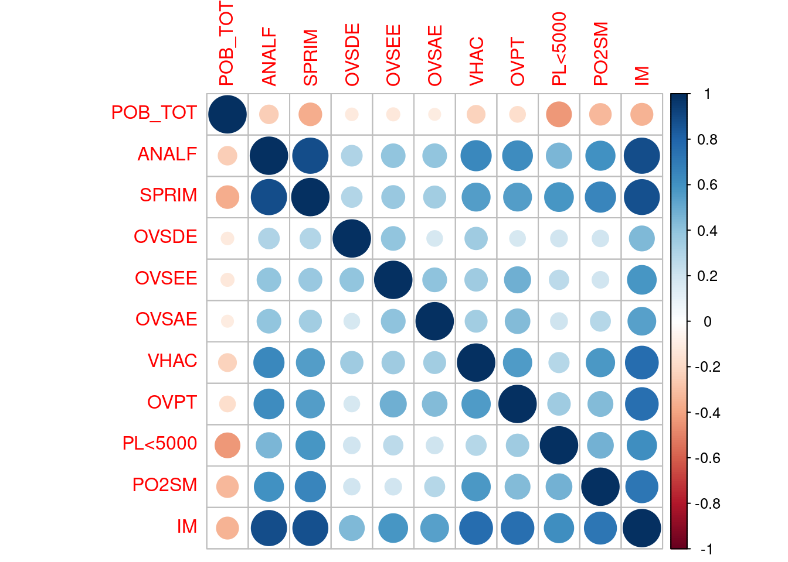

Capítulo 3 Manejo da datos
Functional programming combines the flexibility and power of abstract mathematics with the intuitive clarity of abstract mathematics. Randall Munroe
3.1 El objeto de este documento.
La manipulación de datos es una de las actividades que más tiempo insumen en la investigación cuantitiva. Manipular datos implica darles la forma necesaria o aplicarles las transformaciones que nos permiten analizarlos del modo en queremos. Este documento se limita a un sólo ámbito de la manipulación que podríamos dar el nombre de transformación. Otros dos ámbitos deben ser tenidos en cuenta: la adquisición de datos y su limpieza, que serán cubiertos en sendas guías. La adquisición es forzozamente previa a cualquier manipulación, sin algún tipo de datos no tenemos nada que manipular. En R podemos adquirir datos de diversas formas: capturándolos directamente en nuestra consola, importándolos desde archivos en diversos formatos o extrayéndolos desde fuentes en línea.7 La limpieza de datos puede hacerse de manera simultanea con la manipulación, pero hacerlo previamente facilita muchísimo la manipulación.
Para analizar datos es necesario disponer de ellos en nuestro entorno de trabajo R y dotarlos de una estructura que comprendamos tanto nosotros como las funciones de R que utilizaremos. Como veremos, en términos técnicos esto significa que trataremos siempre manejarlos como una estructura de la clase data.frame y en formato tidy o prolijo. Esos también deben estar limpios, es decir, estar claramente especificados en su tipo, codificados de manera consistente y libre ambigüedades. En términos prácticos eso significa que las columnas tendrán nombres claros y comprensibles8 y especificado el tipo de datos que contienen –numérico, factor, caracter, fecha, etc-; que el conjunto de datos estará libre de ambigüedades de codificación y errores, incluídos los ortográficos y que los casos perdidos estarán explícitamente señalados como valores NA. La tranformación de datos será mucho más fluida si trabajamos con conjunto de datos limpio, en este sentido de la palabra.
Transformar los datos no significa en modo alguno alterarlos, significa estrictamente cambiarles la forma: modificar su estructura, pero no la información que contienen. Es muy probable que una transformación implique también pérdida de información, pero a cambio obtendremos beneficios de inteligibilidad.
En apretada síntesis la manipulación de datos se resume en cuatro operaciones:
- Extraer subconjuntos de datos. Ya sea subconjuntos de filas o columnas. En los casos prácticos nunca haremos un análisis sobre la totalidad de los datos.
- Transformarlos. Realizar operaciones aritméticas o lógicas sobre los datos. En general cuando una variable es contínua realizamos operaciones aritméticas, cuando es categórica, lógicas.
- Obtener sumarios del conjunto de los datos o por grupos. Con frecuencia el análisis no se hace sobre todos los datos sino sobre medidas sumarias: conteos, medias, desviaciones estandar. -Unirlos con otros datos. La proliferación de bases de datos hace cada vez más útil combinar múltiples fuentes para enriquecer el análisis.
Este documento se basea en un paradigma de trabajo –la programación funcional basada en la inmutabilidad de los datos y la transparencia referencial–, un conjunto de herramientas disponibles en R –reunidas en las librerías tidyr:: y dplyr:: entre otras– y un formato preferido para datos –tidy data– compatible con ese paradigma y herramientas. Con estos tres pilares podermos llevar a cabo las operaciones resumidas previamente.
3.2 Manipulación de datos con tidyverse::
Las tareas de operaciones de manipulación de datos que hemos mencionado pueden llevarse a cabo de distintas maneras. La librería base:: de R contiene operadores y funciones para hacerlo, por ejemplo [,] para extraer subconjuntos, subset() para operaciones agrupadas, merge(), cbind() o rbind() para combinar múltiples fuentes de datos. A pesar de ser funciones sumamente flexibles y aplicables a múltiples estructuras de datos no son las más convenientes. Están pensadas para usarlas en en un paradigma procedimental, más que con uno funcional, además generan un código dificil de leer y nos obligan a repetir los nombres de las estructuras de datos en cada llamada.
La librería dplyr:: ofrece un conjunto unificado de herramientas de manipulación de datos que induce a la programación funcional, produce código legible cuya comprensión es intuitiva y, al estar implementada en lenguaje C, ofrece tiempos de ejecución muy cortos.
El conjunto de herramientas de dplyr:: funciona exclusivamente con la estructura de datos data.frame. Esta estrutcuta no es tan rápida como una matríz para operaciones aritméticas ni tan flexibles como una lista, pero es mucho más fácil de manejar: las columnas son las variables y las filas las observaciones. Una ventaja aún mayor es que un data.frame siempre es un data.frame. Es mucho más fácil organizar los procesos si sabemos exactamente qué entra y qué sale. Las funciones de dplyr:: sólo admiten como imput un data.frame y siempre producen como output un data.frame o un mensaje de error. Esta estabilidad de estructura hace que nuestro código se comporte de una forma predecible y los datos nunca pierdan sus atributos. El output de las funciones es completamente predecible y podemos pasarlo con confianza como input de la siguiente, sin tener que registrarle un nombre en el entorno.
Las capacidades de dplyr:: están ampliadas por algunas librerías cómplices. Una importante es magrittr::, que introduce a R el operador binario %>%,9 una tubería a la que leemos en voz alta como “después”. Con %>% enlazamos los pasos de la manipulación de datos de las funciones de dplyr:: en el orden natural de ejecución. Con %>% organizamos una secuencia de análisis que culminará en un gráfico así: importar_datos %>% recodificar %>% hacer_conteos %>% hacer_grafico. Es decir, leer datos de un archivo, después recodificar esos datos, después hacer conteos sobre los datos recodificados y después graficar esos conteos.
dplyr:: importa el operador %>% de magrittr::, así que lo tendremos siempre disponible. Si queremos usar los restantes operadores deberemos cargar la librería.10
Otra librería hermana de dplyr:: es tidyr::, que incluye funciones para corregir algunos errores frecuentes en bases de datos y cambiarles la estrctura. tidyr:: además introduce el concepto datos prolijos o tidy data, una manera consistente de organizar la información contenida en estructura de la clase data.frame que facilita su manipulación. Ya veremos de qué se trata y por qué son importantes. Dado que dplyr:: funciona mejor con datos que tienen cierto formato el primer paso será identificar cuál es ese formato de datos.
3.3 La forma de los datos.
3.3.1 ¿Sumarios de datos o base de datos?
Con frecuencia los datos que encotramos en internet no son bases de datos en sentido estricto, sino sumarios o informes que condensan información. Una tabla en la que se registran cada una de las ventas de una frutería, con montos, cantidades, fecha y hora de la transacción, es una base de datos en bruto. Una tabla que resume las ventas mensuales es un sumario. Es muy probable que ese sumario se haya originado en una base de datos, pero esta o no es de acceso público o debemos seguir buscando para encontrarla. Siempre que resulte posible trabajaremos con bases de datos tan desagregadas como nos resulte posible conseguir, ya que tienen mayor cantidad de información. Si es necesario un sumario podemos realizarlo, pero no a la inversa. Es decir, a partir de una base de datos podemos crear los sumarios, pero desde los sumarios no podemos recrear la base de datos.
| Fecha | Producto | Precio | Cantidad |
|---|---|---|---|
| 20/02/2017 | Manzana | 10 | 1.0 |
| 20/02/2017 | Pera | 15 | 2.0 |
| 21/03/2017 | Ciruela | 13 | 0.5 |
| 22/03/2017 | Naranja | 9 | 3.0 |
| Mes | Ventas |
|---|---|
| Febrero | 40.0 |
| Marzo | 33.5 |
En R y con dplyr:: podemos manejar información en versión sumario, cosa que haremos cuando no podemos acceder a los datos crudos. Sin embargo como dplyr:: funciona solamente con data.frames es necesario que esos datos tengan una estructura rectangular.
3.4 Datos rectangulares.
Con dplyr:: podemos manipular datos provenientes importados desde casi cualquier formato de archivo, pero si como trabajamos con la estructura data.frame es necesario que cumplan una condición: los datos deben ser rectangulares. Por rectangulares se entiende que están organizados en filas y columnas contíguas y que cada filas tiene el mismo largo que las demás, así como todas las columnas.11 Cuando la intersección de una fila y una columna no tiene un dato válido debe codificarse como NA, not available o información perdida.
Es frecuente que cuando descargamos datos capturados o procesados con Excel los datos no sean rectangulares. Es un práctica tan mala como ampliamente difundida entre los usuarios de Excel usar la misma hoja para alojar los datos y el procesamiento de datos.12 o aprovechar la flexibilidad de esa aplicación para poner datos que corresponden a diferentes temáticas o indicadores en la misma columna. El proceso de importar esos datos mal formateados a R es penoso.
Veamos un ejemplo de datos no rectangulares y rectangulares.
| Ventas | X__1 | X__2 | X__3 | X__4 |
|---|---|---|---|---|
| Frutería “La desprolija” | NA | NA | NA | NA |
| Primer Trimestre | NA | NA | NA | NA |
| Manzanas | 100 | NA | NA | NA |
| Peras | 120 | NA | Ventas de fruta de carozo: | 614 |
| Ciruelas | 85 | NA | NA | NA |
| Segundo Trimestre | NA | NA | Ventas de frutas de pepita: | 166 |
| Manzanas | 110 | NA | NA | NA |
| Peras | 40 | NA | NA | NA |
| Ciruelas | 25 | NA | NA | NA |
| Tercer Trimestre | NA | NA | NA | NA |
| Manzanas | 60 | NA | NA | NA |
| Peras | 45 | NA | NA | NA |
| Ciruelas | 22 | NA | NA | NA |
| Cuatro Trimestre | NA | NA | NA | NA |
| Manzanas | 48 | NA | NA | NA |
| Peras | 91 | NA | NA | NA |
| Ciruelas | 34 | NA | NA | NA |
| NA | NA | NA | NA | NA |
| Ventas totales en el año: | NA | 780 | NA | NA |
| Fruta | Primer trimestre | Segundo Trimestre | Tercer Trimestre | Cuatro Trimestre |
|---|---|---|---|---|
| Manzanas | 100 | 110 | 60 | 48 |
| Peras | 120 | 40 | 45 | 91 |
| Ciruelas | 85 | 25 | 22 | 34 |
Los datos no rectangulares fueron creados en Excel y R los fuerza a formato rectangular agregando NA allí donde es necesario. Sería muy dificultoso manipular esos datos desde R. Como en cada columna puede haber más de un tipo de dato (ejp. la columna 1 tiene información sobre frutas y sobre trimestres) o ninguno no hay forma de llamarlas por nombre. Si eso fuera poco un sumario de datos (ventas de frutas de carozo y pepita) comparte el espacio con datos en bruto.
En la estructura rectangular están solamente los datos y podemos manipularlos con facilidad. La sumatoria de la columna 2 nos da las ventas totales del primer trimestre. La sumatoria de la fila 1 las ventas anuales de Manzanas. No tiene sumarios, pero podríamos generarlos con mucha gran facilidad.
Si importamos datos desde Excel debemos prestar mucha atención a que estén en formato rectangular. Si el formato fuera irregular la mejor alternativa es pasarlos a formato rectangular usando el mismo Excel, antes de imporarlos a R. Cargue todos los datos, si es necesario en varias estructuras pequeñas, cada una de las cuales deberá ser rectangular. No se preocupe por los sumarios que dependan únicamente de los datos incluídos en la base o bases, con datos bien estructurados reconstruirlos lleva segundos.
Guarde su información en formato rectangular siempre, aún cuando no tenga planeado usar R. Antes de ingresar datos a una planilla de cálculos piense primero: ¿Qué operaciones voy a realizar sobre estos datos? ¿Cuál es la mejor forma de organizarlos?
3.4.1 Datos prolijos (tidy data)
Los datos prolijos son aquellos en los que se cumplen simultaneamente dos condiciones: cada columna es una variable y cada fila una observación. Quizás un ejemplo nos aclare el problema. Veamos primero un conjunto de datos que parece muy razonalbe, pero que de acuerdo con nuestra definición no está en un formato prolijo:
| Fruta | Indicador | 2015 | 2016 |
|---|---|---|---|
| Mandarina | Precio | 10 | 12 |
| Toronja | Precio | 14 | 15 |
¿Por qué son desprolijos estos datos? Porque Precio no es una observación sino una variable y los años no son variables, son puntos de datos u observaciones. En formato prolijo deberíamos tener las columnas Fruta, Año y Precio, con una observación por cada año y fruta.13
En versión prolija sería así:
| Fruta | Año | Precio |
|---|---|---|
| Mandarina | 2015 | 10 |
| Mandarina | 2016 | 12 |
| Toronja | 2016 | 14 |
| Toronja | 2016 | 15 |
Siempre que generemos datos –o estemos en condiciones de especificar el formato que tendrán– elegiremos datos prolijos. Si no podemos obtenerles en ese formato entonces los reformatearemos hasta llevarlos a datos prolijos. La librería tidyr:: incluye funciones que solucionan muchos de los problemas frecuentes para pasar datos desprolijos a prolijos.
3.4.2 Reformateo de datos.
De ningún modo vamos a hacer ese reformateado de datos manualmente, un proceso tedioso y propenso a errores. tidyr:: tiene la función gather() que se especializa en solucionar este problema.14 gather() toma un conjunto de datos con las observaciones en las colunas, convierte a cada una de esas columnas en una clave y crea otra nueva que registra el valor correspondiente a cada. Es decir, nos regresa la versión prolija de nuestros datos.
tribble(
~Fruta, ~Indicador, ~`2015`, ~`2016`,
"Mandarina", "Precio", 10, 12,
"Toronja", "Precio", 14, 15
) ->desprolijo #Asigno el nombre desprolijo a este data.frame.
print(desprolijo) #Y lo paso a la consola con print.## # A tibble: 2 x 4
## Fruta Indicador `2015` `2016`
## <chr> <chr> <dbl> <dbl>
## 1 Mandarina Precio 10 12
## 2 Toronja Precio 14 15#Reformateado de datos I
#=======================
desprolijo %>%
gather () #Paso desprolijo a gather() sin argumentos.## # A tibble: 8 x 2
## key value
## <chr> <chr>
## 1 Fruta Mandarina
## 2 Fruta Toronja
## 3 Indicador Precio
## 4 Indicador Precio
## 5 2015 10
## 6 2015 14
## 7 2016 12
## 8 2016 15#El resultado que obtuve no es el que busco, gather() pasó todas las columnas anterioes a filas, pero lo que buscamos es que sólo algunas columnas pasen a filas.
#Reformateado de datos II
#========================
desprolijo %>%
gather(key, value, #Los dos primeros argumentos son los nombres de las columnas que se crerán.
`2015`, `2016`) #Los siguientes las columnas que pasaremos a filas. Estos nombres de columna se repetirán en key y las filas llenarán value. ## # A tibble: 4 x 4
## Fruta Indicador key value
## <chr> <chr> <chr> <dbl>
## 1 Mandarina Precio 2015 10
## 2 Toronja Precio 2015 14
## 3 Mandarina Precio 2016 12
## 4 Toronja Precio 2016 15#Reformateado de datos III
#=========================
desprolijo %>%
gather(Año, Precio, #Doy nombres útiles a key y value: quiero los años y los precios.
-Fruta, -Indicador) %>% #Especifico que columnas NO voy a pasar a filas usando "-".
select(-Indicador) #Quito la columna redundante. ## # A tibble: 4 x 3
## Fruta Año Precio
## <chr> <chr> <dbl>
## 1 Mandarina 2015 10
## 2 Toronja 2015 14
## 3 Mandarina 2016 12
## 4 Toronja 2016 15#Crear una función ad hoc (Avanzado, no es necesario, es recomendable)
#=====================================================================
arreglar <- function(datos) { #Asigno nombre a la función.
select(gather(datos, Año, Precio, -Fruta, -Indicador), -Indicador) #Código en ejecución.
} #Cierro llave de función.
#Esta función ad hoc sólo sirve para estos datos u otros una estructura idéntica. Pero nos ayuda a ahorrar tiempo tipeando si tenemos que arreglar una y otra vez el mismo error.
desprolijo %>%
arreglar() #Menos código, no me repito y expongo a errores de dedazo.## # A tibble: 4 x 3
## Fruta Año Precio
## <chr> <chr> <dbl>
## 1 Mandarina 2015 10
## 2 Toronja 2015 14
## 3 Mandarina 2016 12
## 4 Toronja 2016 153.5 Manejo de datos con dplyr::
Con los datos cargados y en formato prolijo manipularlos con dplyr() es muy fácil. Quizás lo más dificil sea figurarnos el estado de los datos al que queremos llegar. Una vez que tenemos una idea clara del punto de partida y el punto de llegada debemos dividir el trayecto en pasos simples, tan simples como para ser comprensibles por R y menlazar esos pasos con el operador %>%. Si partimos de los datos en la tabla “Datos prolijos” y queremos obtener un promedio de ventas anuales de los dos productos primero deberíamos cargar los datos, luego agruparlos por año y obtener la media por grupos e imprimirla para hacerla visible. Con dplyr lo haríamos así: datos_prolijos %>% group_by(Año) %>% summarise(mean(Precio)). Con esta simple estructura de sintaxis podemos hacer prácticamente cualquier manipulación de datos.
3.5.1 Verbos básicos de dplyr::
La manipulación de datos con dplyr:: se basa en 5 verbos básicos.
select(), para seleccionar columnas. Si el formato es prolijo columna y variables son equivalentes.filter(), para filtrar filas de acuerdo a una o más condiciones.group_by(), para generar grupos. Admite más de un nivel de agrupamiento.mutate(), para hacer transformaciones y recodificación de variables. Regresa un resultado por fila.summarise(), para generar sumarios de variables. Regresa un resultado por variable o por cada grupo previamente definido congroup_by().- El operador
%>%nos permite encadenar operaciones.%>%pasa el output de una función como primer argumento de la siguiente. Normalmente el primer argumento de una función son los datos, con lo que nos ahorraremos tipear una y otra vez a que datos nos referimos.
A estos verbos básicos se agregan otros de uso menos frecuente, pero de gran utilidad en ciertas ocasiones.
arrange(), para ordenar resultados en orden numérico o alfabético.
recode(), para recodificar variables. Se lleva muy bien conmutate().mutate_all(),mutate_if()ymutate_at(), para hacer transformaciones a varias columnas de una vez. Técnicamente vectoriza una función de transformación.spread()ygather()para reformatear nuestra estructura de datos y pasar de formato largo a ancho y de ancho a largo. Pertenecen atidyr(), una librería hermana dedplyr::rename()para cambiar nombres de columna.- La familia de funciones
_joinpara combinar diferentes datos en una misma estuctura. La sintaxis es algo compleja, pero tiene muchísima flexibilidad.
3.5.2 Uso de la de sintaxis de dplyr::
Repasaremos algunas funciones básicas de dplyr::. Produciremos intencionalmente algunos errores que aclararán el proceso.
Se presenta la sintaxis paso por paso, con la salida en consola correspondiente a cada paso. Buena parte del código es redundante, sin embargo se lo incluye como ejemplo del flujo de trabajo típico con dplyr:: y magrittr::: hacemos una operación, verificamos el resultado, luego encadenamos la siguiente, verificamos y así hasta obtener el resultado esperado.
library(tidyverse) #Carga varias librerías, entre ellas dplyr y tidyr.
#Crear un data.frame
#===================
tribble( #Creo los datos con la función tribble, muy útil por su legibilidad al organizar la entrada en columnas.
~Col1, ~Col2, ~Col3, #Nombres de columna, se antepone ~
"Pepita", "Manzana", 48, #Llenamos las columnas una a una. Mucha atención a las comas!!
"Pepita", "Pera" , 52,
"Cítrico", "Naranja", 12,
"Cítrico", "Mandarina", 8,
"Carozo", "Durazno", 60,
"Carozo", "Ciruela", 55 #En la última columna NO usamos la coma.
) #Cierro el paréntesis de la función tribble. Se genera el data.frame. Silenciosamente invoca a la función print() y saca el resultado en consola. ## # A tibble: 6 x 3
## Col1 Col2 Col3
## <chr> <chr> <dbl>
## 1 Pepita Manzana 48
## 2 Pepita Pera 52
## 3 Cítrico Naranja 12
## 4 Cítrico Mandarina 8
## 5 Carozo Durazno 60
## 6 Carozo Ciruela 55#Renombrar columnas
#==================
tribble(
~Col1, ~Col2, ~Col3,
"Pepita", "Manzana", 48,
"Pepita", "Pera" , 52,
"Cítrico", "Naranja", 12,
"Cítrico", "Mandarina", 8,
"Carozo", "Durazno", 60,
"Carozo", "Ciruela", 55
) %>% #Paso el data.frame a la siguiente función.
rename(Tipo=Col1, #Cambio los nombres a unos más fáciles de recordar.
Fruta=Col2, #Hago un cambio en cada línea para facilitar la legibilidad.
Precio=Col3) ## # A tibble: 6 x 3
## Tipo Fruta Precio
## <chr> <chr> <dbl>
## 1 Pepita Manzana 48
## 2 Pepita Pera 52
## 3 Cítrico Naranja 12
## 4 Cítrico Mandarina 8
## 5 Carozo Durazno 60
## 6 Carozo Ciruela 55#Filtrar filas (error)
#============================
tribble(
~Col1, ~Col2, ~Col3,
"Pepita", "Manzana", 48,
"Pepita", "Pera" , 52,
"Cítrico", "Naranja", 12,
"Cítrico", "Mandarina", 8,
"Carozo", "Durazno", 60,
"Carozo", "Ciruela", 55
) %>%
rename(Tipo=Col1,
Fruta=Col2,
Precio=Col3) %>%
filter(Col2=="Cítrico") #filter() regresa un error: Col2 no existe. ¿Por qué? Porque la renombramos en el paso anterior ## Error in filter_impl(.data, quo): Evaluation error: objeto 'Col2' no encontrado.#Filtrar filas
#=============
tribble(
~Col1, ~Col2, ~Col3,
"Pepita", "Manzana", 48,
"Pepita", "Pera" , 52,
"Cítrico", "Naranja", 12,
"Cítrico", "Mandarina", 8,
"Carozo", "Durazno", 60,
"Carozo", "Ciruela", 55
) %>%
rename(Tipo=Col1,
Fruta=Col2,
Precio=Col3) %>%
filter(Tipo=="Cítrico") #Conserva solamente las filas en las que Tipo es igual a "Cítrico" ## # A tibble: 2 x 3
## Tipo Fruta Precio
## <chr> <chr> <dbl>
## 1 Cítrico Naranja 12
## 2 Cítrico Mandarina 8#Filtrado negativo.
#==================
tribble(
~Col1, ~Col2, ~Col3,
"Pepita", "Manzana", 48,
"Pepita", "Pera" , 52,
"Cítrico", "Naranja", 12,
"Cítrico", "Mandarina", 8,
"Carozo", "Durazno", 60,
"Carozo", "Ciruela", 55
) %>%
rename(Tipo=Col1,
Fruta=Col2,
Precio=Col3) %>%
filter(Tipo!="Cítrico") #Usando != conserva solamente las filas en las que Tipo NO es igual a "Cítrico"## # A tibble: 4 x 3
## Tipo Fruta Precio
## <chr> <chr> <dbl>
## 1 Pepita Manzana 48
## 2 Pepita Pera 52
## 3 Carozo Durazno 60
## 4 Carozo Ciruela 55#Filtrado para datos númericos.
#==============================
tribble(
~Col1, ~Col2, ~Col3,
"Pepita", "Manzana", 48,
"Pepita", "Pera" , 52,
"Cítrico", "Naranja", 12,
"Cítrico", "Mandarina", 8,
"Carozo", "Durazno", 60,
"Carozo", "Ciruela", 55
) %>%
rename(Tipo=Col1,
Fruta=Col2,
Precio=Col3) %>%
filter(Precio>=12) #Usando >= conservo solamente las filas en las que el precio es mayor a igual a 12. <, >, y <= también son válidos.## # A tibble: 5 x 3
## Tipo Fruta Precio
## <chr> <chr> <dbl>
## 1 Pepita Manzana 48
## 2 Pepita Pera 52
## 3 Cítrico Naranja 12
## 4 Carozo Durazno 60
## 5 Carozo Ciruela 55#Seleccionar columnas
#====================
tribble(
~Col1, ~Col2, ~Col3,
"Pepita", "Manzana", 48,
"Pepita", "Pera" , 52,
"Cítrico","Naranja", 12,
"Cítrico","Mandarina", 8,
"Carozo", "Durazno", 60,
"Carozo", "Ciruela", 55
) %>%
rename(Tipo=Col1,
Fruta=Col2,
Precio=Col3) %>%
filter(Tipo!="Cítrico") %>% #Filtro los que NO son cítricos usando != en lugar de ==
select(Precio, Fruta) #Selecciono las columnas Precio y Fruta, saldrán en ese orden. Nótese que cada función opera sobre el output de la anterior. ## # A tibble: 4 x 2
## Precio Fruta
## <dbl> <chr>
## 1 48 Manzana
## 2 52 Pera
## 3 60 Durazno
## 4 55 Ciruela#Cálculos agrupados
#==================
tribble(
~Col1, ~Col2, ~Col3,
"Pepita", "Manzana", 48,
"Pepita", "Pera" , 52,
"Cítrico", "Naranja", 12,
"Cítrico", "Mandarina", 8,
"Carozo", "Durazno", 60,
"Carozo", "Ciruela", 55
) %>%
rename(Tipo=Col1,
Fruta=Col2,
Precio=Col3) %>% #Retomo los datos originales, renombradas las columnas.
group_by(Tipo) %>% #Agrupo por tipo. Las siguientes operaciones se harán por este grupo.
summarise(promedio= #Nombre de la columna que se creará con el sumario. Opcional, pero recomendable.
mean( #Función que utilizaremos. mean regresa la media.
Precio) #Columna sobre la que opera la función.
) %>% #Cierro el paréntesis que abrí en summarise()
arrange(promedio) #Ordeno de menor a mayor. ## # A tibble: 3 x 2
## Tipo promedio
## <chr> <dbl>
## 1 Cítrico 10
## 2 Pepita 50
## 3 Carozo 57.5#Transformaciones de columnas
#============================
tribble(
~Col1, ~Col2, ~Col3, ~Col4, #Creé una nuevo columna.
"Pepita", "Manzana", 48, 12,
"Pepita", "Pera" , 52, 7,
"Cítrico", "Naranja", 12, 50,
"Cítrico", "Mandarina", 8, 40,
"Carozo", "Durazno", 60, 3,
"Carozo", "Ciruela", 55, 10
) %>%
rename(Tipo=Col1,
Fruta=Col2,
Precio=Col3,
Kilos=Col4) %>% #La nueva columna son los kilos en el inventario.
mutate(Fruta=recode(Fruta, #Recodifico una variable categórica.
Manzana="Manzana Verde")) %>% #categoría_vieja="categoría_nueva". ¡Atención a las comillas!
mutate(Capital=Precio*Kilos) #Creo una nueva columna numérica a partir de otras dos.Uso * para multiplicación. También podria usar +, -, / y ^ para potecia.## # A tibble: 6 x 5
## Tipo Fruta Precio Kilos Capital
## <chr> <chr> <dbl> <dbl> <dbl>
## 1 Pepita Manzana Verde 48 12 576
## 2 Pepita Pera 52 7 364
## 3 Cítrico Naranja 12 50 600
## 4 Cítrico Mandarina 8 40 320
## 5 Carozo Durazno 60 3 180
## 6 Carozo Ciruela 55 10 550#Asigno nombre al resultado de una función
#=========================================
tribble(
~Tipo, ~Fruta, ~Precio, ~Kilos, #Creé una nuevo columna.
"Pepita", "Manzana", 48, 12,
"Pepita", "Pera", 52, 7,
"Cítrico", "Naranja", 12, 50,
"Cítrico", "Mandarina", 8, 40, #Mandarina no está en frutería2.
"Carozo", "Durazno", 60, 3,
"Carozo", "Ciruela", 55, 10
) -> frutería1 #Asigno el nombre frutería1 al final de la cadena con -> ¡El resultado no saldrá en la consola pero quedará disponible!
frutería2 <- tribble(
~Fruta, ~precio_futuro, #Alternativamente asigno al principio de la cadena con <-. De todos modos se asignará el resultado final de la cadena.
"Naranja", 12,
"Manzana", 48,
"Pera" , 52,
"Durazno", 60,
"Toronja", 8, #Toronja no está en frutería1
"Ciruela", 55
)3.6 Uso avanzado de dplyr::
3.6.1 Alternar entre formato largo y ancho.
El formato de datos largo es el que llamamos prolijo. Sin embargo en ocasiones puede ser necesario hacer el proceso inverso y pasar datos de formato largo a formato ancho. Por ejemplo, para hacer operaciones matemáticas entre columnas. Siempre es mejor partir del formato largo y prolijo y pasar a formato ancho allí donde es necesario.
La función spread() hace este cambio.
#Formato largo a formato ancho
#=============================
desprolijo %>%
arreglar %>%
spread(Año, Precio) #Año será nombre de columna, Precio los valores de cada año. ## # A tibble: 2 x 3
## Fruta `2015` `2016`
## <chr> <dbl> <dbl>
## 1 Mandarina 10 12
## 2 Toronja 14 15desprolijo %>%
arreglar %>%
spread(Año, Precio) %>%
mutate(variación_precio=`2016`-`2015`) #Puedo hacer el cálculo. ## # A tibble: 2 x 4
## Fruta `2015` `2016` variación_precio
## <chr> <dbl> <dbl> <dbl>
## 1 Mandarina 10 12 2
## 2 Toronja 14 15 13.6.2 Seleccionar las columnas que cumplen determinada condición.
Hasta ahora hemos visto como seleccionar columnas escribiendo sus nombres separados por comas o usando - para señalar cuales no queremos que permanezcan. select() tiene algunas funciones ayudantes que permiten seleccionar columnas de acuerdo con alguna condición lógica y pueden ser de gran ayuda cuando trabajamos con bases de datos con gran número de columna.
tribble(~frutamanzana, ~frutamandarina, ~vegetalcalabacin, ~vegetalzanahoria,
10, 8, 15, 10) -> fruteria_verdulería
select(fruteria_verdulería, starts_with("vegetal")) #Selecciona todas las columnas cuyo nombre comienza con la cadena "vegetal"## # A tibble: 1 x 2
## vegetalcalabacin vegetalzanahoria
## <dbl> <dbl>
## 1 15 10## # A tibble: 1 x 2
## frutamanzana frutamandarina
## <dbl> <dbl>
## 1 10 8## # A tibble: 1 x 3
## frutamanzana frutamandarina vegetalzanahoria
## <dbl> <dbl> <dbl>
## 1 10 8 10## # A tibble: 1 x 3
## frutamandarina vegetalcalabacin vegetalzanahoria
## <dbl> <dbl> <dbl>
## 1 8 15 103.6.3 Filtrar por más de una condición o dentro de un conjunto.
Filter es una herramienta muy potente para hacer subconjuntos de datos. Para sacar el mayor provecho vale la pena reflexionar sobre la forma en que opera y la sintaxis de la función nos da una pista. Entre los paréntesis posteriores a filter ubicamos una condición lógica que especificamos a través de operadores binarios. Los operadores binarios más conocidos son los que usamos frecuentemente para definir operaciones aritméticas: + para sumar o - para restar. Se los llama binarios porque se ubican entre dos expresiones y establecen una relación entre ellas, de lo contrario sería operadores unarios, otra clase también definida por R. Consiguientemente si no ubicamos al operador binario entre dos expresiones R nos regresará un error. A las dos expresiones que envuelven a un operador binario las llamados lado derecho y lado izquierdo. Esto es de la mayor importancia, ya que la ubicación en cada uno de los lados hace que la operación sea diferente. La aritmética nos ayuda una vez más a comprenderlo, si queremos hacer una resta entre los números 10 y 2 no obtenemos el mismo resultado alternando el lado en que los ubicamos. 10-2 no es lo mismo que 2-10. a %in% x, que se lee en voz alta como ‘a pertenece a x’ no es lo mismo que ‘x pertenece a a’. Filter utiliza todos los operadores binarios de R, que se detallan en tabla a continuación. Con esta especificación R evalúa el cumplimiento de una condición y regresa TRUE cuando se cumple y FALSE cuando no. Dado que R opera por defecto de manera vectorizada, cuando especificamos un vector evalúa todo el vector y regresa un vector de TRUEy FALSE del mismo largo del que introduducimos. Posteriormente filter() conseva solamente aquellas filas en las que el resultado de la evaluación fue TRUE. Esta evaluación aplica tanto para cadenas de caracteres como para datos del tipo numérico. En el caso de las cadenas de caracteres algunos operadores utilizarán el orden alfabético, así "pera">"manzana" regresa TRUE, porque p ocupa el lugar 16 en el alfabeto y m el 13. En caso de empate R evaluará la segunda letra y así hasta desempatar.
Table: Operadores binarios de R disponibles para filter()
| Operador | Uso |
|---|---|
== |
Igual que |
> |
Mayor que |
>= |
Mayor o igual que |
< |
Menor que |
<= |
Menor o igual que |
%in% | Pertenece a un vector|Vectores numéricos o de caracteres&| Y lógica, para especificar una segunda condición a cumplirse | Entre dos expresiones binarias |
| Ó lógica, para especificar una condición alternativa | Entre dos expresiones binarias!| No, invierte el sentido de cada operador, regresa TRUE cuando *no* se cumple la condición | Detrás de cualquiera de los operadores%like%` |
Usando estos operadores y sus combinaciones podemos hacer prácticamente cualquier operación de filtrado de filas, empleando información de una o más columnas, siempre que estén dentro del data.frame al que estamos manipulando. Si bien es posible hacer filtrados sucesivos encadenando operaciones de filter() por cuestiones de desempeño –sobre todo en bases de datos muy grandes– y compacitud del código es preferible cargar tantas condiciones como es posible en la misma cadena. Recuerde que cada vez que invocamos la función R debe recorrer todo el vector evaluando, es mejor que lo haga sólo una vez para un conjunto de condiciones complejas que muchas veces para condiciones simples.
##
## Attaching package: 'data.table'## The following objects are masked from 'package:dplyr':
##
## between, first, last## The following object is masked from 'package:purrr':
##
## transpose#Datos
#=====
tribble(~Estado, ~Municipio, ~Población,
"Chihuahua", "Juárez", 1391180,
"Nuevo León", "Juárez", 333481,
"Chiapas", "Juárez", 21222,
"Chiapas", "Unión Juárez", 15350,
"Guerrero", "Acapulco de Juárez",810669,
"Ciudad de México", "Milpa Alta", 137927,
"Chihuahua", "Batopilas", 9751,
"Nuevo León", "Apodaca", 115913,
"Nuevo León", "Carmen", 4906
) -> municipios
#Dos condiciones.
filter(municipios, Municipio=="Juárez" & Población <400000) #Municipios llamados Juárez con población menor a 400000.## # A tibble: 2 x 3
## Estado Municipio Población
## <chr> <chr> <dbl>
## 1 Nuevo León Juárez 333481
## 2 Chiapas Juárez 21222#Cadenas similares
filter(municipios, Municipio %like% "Juárez" & Población <400000) #Incluye Unión Juárez, similar a "Juárez", no Acapulco o CD Juáres por la 2da condición. ## # A tibble: 3 x 3
## Estado Municipio Población
## <chr> <chr> <dbl>
## 1 Nuevo León Juárez 333481
## 2 Chiapas Juárez 21222
## 3 Chiapas Unión Juárez 15350#Una u otra condición.
filter(municipios, Municipio =="Juárez" | Población==137927) #Municipios llamados Juárez o con una población de 137927 (Milpa Alta)## # A tibble: 4 x 3
## Estado Municipio Población
## <chr> <chr> <dbl>
## 1 Chihuahua Juárez 1391180
## 2 Nuevo León Juárez 333481
## 3 Chiapas Juárez 21222
## 4 Ciudad de México Milpa Alta 137927#No es igual.
filter(municipios, Estado!="Chihuahua" & Población>400000) #Población superir a 40000 habitantes, NO en Chihuahua. ## # A tibble: 1 x 3
## Estado Municipio Población
## <chr> <chr> <dbl>
## 1 Guerrero Acapulco de Juárez 810669#Pertenencia a un conjunto.
filtro <- c("Acapulco de Juárez", "Milpa Alta") #Defino el conjunto como un vector.
filter(municipios, Municipio %in% filtro) #Pertenece a un vector.## # A tibble: 2 x 3
## Estado Municipio Población
## <chr> <chr> <dbl>
## 1 Guerrero Acapulco de Juárez 810669
## 2 Ciudad de México Milpa Alta 1379273.6.4 Transformacion avanzada de datos.
Usándolo con cuidado mutate() es una herramienta muy potente para hacer transformaciones de datos. En términos muy prácticos mutate() une un vector resultado de una función al data.frame con el que estamos trabajando. Es decir, cualquier función que tome uno o más vectores y nos regrese otro puede utilizarse dentro de mutate(), incluyendo algunas básicas como ifelse() para operaciones condicionales vectoriales, cumsum() para sumas acumuladas. lag() y lead() para mover un vector una línea abajo o hacia arriba respectivamente, permitiéndonos computar la diferencia entre una fila y la anterior o posterior. También es posible pasar varias transformaciones al mismo tiempo separándolas con comas.
La familia ampliada de mutate() incluye mutate_all(), para aplicar la misma transformación a todas las variables, mutate_if() que aplica una transformación a las variables que cumplen con una condición.
#Dicotomiza una variable continua. ifelse()
municipios %>%
mutate (tamaño= ifelse(Población >400000, "Muy poblado", "Poco poblado"))## # A tibble: 9 x 4
## Estado Municipio Población tamaño
## <chr> <chr> <dbl> <chr>
## 1 Chihuahua Juárez 1391180 Muy poblado
## 2 Nuevo León Juárez 333481 Poco poblado
## 3 Chiapas Juárez 21222 Poco poblado
## 4 Chiapas Unión Juárez 15350 Poco poblado
## 5 Guerrero Acapulco de Juárez 810669 Muy poblado
## 6 Ciudad de México Milpa Alta 137927 Poco poblado
## 7 Chihuahua Batopilas 9751 Poco poblado
## 8 Nuevo León Apodaca 115913 Poco poblado
## 9 Nuevo León Carmen 4906 Poco poblado#Calcular la diferencia entre filas con lag()
municipios %>%
mutate (acumulado = cumsum(Población), diferencia=Población-lag(Población)) ## # A tibble: 9 x 5
## Estado Municipio Población acumulado diferencia
## <chr> <chr> <dbl> <dbl> <dbl>
## 1 Chihuahua Juárez 1391180 1391180 NA
## 2 Nuevo León Juárez 333481 1724661 -1057699
## 3 Chiapas Juárez 21222 1745883 -312259
## 4 Chiapas Unión Juárez 15350 1761233 -5872
## 5 Guerrero Acapulco de Juárez 810669 2571902 795319
## 6 Ciudad de México Milpa Alta 137927 2709829 -672742
## 7 Chihuahua Batopilas 9751 2719580 -128176
## 8 Nuevo León Apodaca 115913 2835493 106162
## 9 Nuevo León Carmen 4906 2840399 -111007#Aplicae la misma transformación a todas las variables numéricas con mutate_if()
municipios %>%
mutate (acumulado = cumsum(Población), diferencia=Población-lag(Población)) %>%
mutate_if(is.numeric, funs(paste("Son", . , "personas"))) ## # A tibble: 9 x 5
## Estado Municipio Población acumulado diferencia
## <chr> <chr> <chr> <chr> <chr>
## 1 Chihuahua Juárez Son 139118… Son 139118… Son NA pers…
## 2 Nuevo León Juárez Son 333481… Son 172466… Son -105769…
## 3 Chiapas Juárez Son 21222 … Son 174588… Son -312259…
## 4 Chiapas Unión Juárez Son 15350 … Son 176123… Son -5872 p…
## 5 Guerrero Acapulco de Juárez Son 810669… Son 257190… Son 795319 …
## 6 Ciudad de México Milpa Alta Son 137927… Son 270982… Son -672742…
## 7 Chihuahua Batopilas Son 9751 p… Son 271958… Son -128176…
## 8 Nuevo León Apodaca Son 115913… Son 283549… Son 106162 …
## 9 Nuevo León Carmen Son 4906 p… Son 284039… Son -111007…#Transformae a todas las colunas al tipo caracter con mutate_all()
municipios %>% mutate_all(as.character) ## # A tibble: 9 x 3
## Estado Municipio Población
## <chr> <chr> <chr>
## 1 Chihuahua Juárez 1391180
## 2 Nuevo León Juárez 333481
## 3 Chiapas Juárez 21222
## 4 Chiapas Unión Juárez 15350
## 5 Guerrero Acapulco de Juárez 810669
## 6 Ciudad de México Milpa Alta 137927
## 7 Chihuahua Batopilas 9751
## 8 Nuevo León Apodaca 115913
## 9 Nuevo León Carmen 49063.6.5 Sumarios avanzados.
summarise() nos permite crear sumarios y es especialmente útil con datos agrupados. Sin embargo es posible que no exista una función que produzca el sumario que necesitamos. En ese caso podemos pasar a summarise() una función personalizada, ya sea una función que hemos definido previamente y hemos asignado nombre o una función anónima o función lambda. En este caso estimaremos la media de población para nuestra muestra, el desvío estandar y el error estandar de la media. Crearemos una función para calcular el error estándar traduciendo a R la notación matemática del error estándar: \(SE\hat{x}=\frac{\sigma}{\sqrt{n}}\), el error estándar de la media es igual al desvío estándar entre la raíz cuadrada de n.
#Con una función ad hoc, creada en la misma sintaxis.
summarise(municipios, n=n(), media=mean(Población), desvio=sd(Población), error_estandar=sd(Población)/sqrt(n()))## # A tibble: 1 x 4
## n media desvio error_estandar
## <int> <dbl> <dbl> <dbl>
## 1 9 315600. 479663. 159888.#Con una función predefinida.
#Defino de una función para calcular el error estandar de la media. La llamo es_media
es_media <- function(x) {
sd(x)/sqrt(length(x))
}
#La utilizo como cualquier otra función de R.
summarise(municipios, n=n(), media=mean(Población), desvio=sd(Población), error_estandar=es_media(Población))## # A tibble: 1 x 4
## n media desvio error_estandar
## <int> <dbl> <dbl> <dbl>
## 1 9 315600. 479663. 159888.#Versión robusta de la función es_media: si n=1 regresa NaN, Not a Number. No se puede estimar el error estandar con n=1
#Sobreescribe la función anterior.
es_media <- function(x) {
ifelse(length(x)==1, NaN, sd(x)/sqrt(length(x)))}
municipios %>%
group_by(Estado) %>%
summarise(n=n(),
media=mean(Población),
desvio=sd(Población),
error_estandar=es_media(Población)) ## # A tibble: 5 x 5
## Estado n media desvio error_estandar
## <chr> <int> <dbl> <dbl> <dbl>
## 1 Chiapas 2 18286 4152. 2936.
## 2 Chihuahua 2 700466. 976818. 690714.
## 3 Ciudad de México 1 137927 NA NaN
## 4 Guerrero 1 810669 NA NaN
## 5 Nuevo León 3 151433. 167143. 96500.3.6.6 Funciones avanzadas de combinación de bases de datos.
dplyr:: nos permite tiene algunos verbos muy usuales en el software de manejo de bases de datos que sirven para combinar múltiples fuentes de datos: los joins o uniones. Sin la sintaxis complicada de un lengujae como SQL podemos combinar bases de datos de manera flexible y aprovechar múltiples fuentes de datos, siempre que tengan al menos una columna que coincida. Podríamos usarlo para unir dos bases de datos con la misma unidad de análisis territorial o para combinar estructuras de datos asimétricas en cuanto al largo.
#Unir varias estructuras de datos
#================================
#Une las filas en las que coinicen frutería1 y frutería2, usando Fruta como clave. Sólo conserva las coincidencias, mandarina desaparece porque no tiene precio futuro.
inner_join(frutería1, frutería2, by = "Fruta") ## # A tibble: 5 x 5
## Tipo Fruta Precio Kilos precio_futuro
## <chr> <chr> <dbl> <dbl> <dbl>
## 1 Pepita Manzana 48 12 48
## 2 Pepita Pera 52 7 52
## 3 Cítrico Naranja 12 50 12
## 4 Carozo Durazno 60 3 60
## 5 Carozo Ciruela 55 10 55#Une todas las filas, imputa NA cuando hay información faltante. No precio futuro para Mandarina y falta información para Toronja.
full_join(frutería1, frutería2, by = "Fruta") ## # A tibble: 7 x 5
## Tipo Fruta Precio Kilos precio_futuro
## <chr> <chr> <dbl> <dbl> <dbl>
## 1 Pepita Manzana 48 12 48
## 2 Pepita Pera 52 7 52
## 3 Cítrico Naranja 12 50 12
## 4 Cítrico Mandarina 8 40 NA
## 5 Carozo Durazno 60 3 60
## 6 Carozo Ciruela 55 10 55
## 7 <NA> Toronja NA NA 8#Conserva sólamente las filas frutería1 que no coinciden con frutería2.
anti_join(frutería1, frutería2, by = "Fruta") ## # A tibble: 1 x 4
## Tipo Fruta Precio Kilos
## <chr> <chr> <dbl> <dbl>
## 1 Cítrico Mandarina 8 40#Conserva las filas de frutería2 que no cinciden con frutería1.
anti_join(frutería2, frutería1, by = "Fruta") ## # A tibble: 1 x 2
## Fruta precio_futuro
## <chr> <dbl>
## 1 Toronja 8#Conserva sólo las filas de frutería1 y agregas las columnas de frutería2, imputa NA si no hay coincidencia. Hay mandarina, pero no toronja...
left_join(frutería1, frutería2, by = "Fruta") ## # A tibble: 6 x 5
## Tipo Fruta Precio Kilos precio_futuro
## <chr> <chr> <dbl> <dbl> <dbl>
## 1 Pepita Manzana 48 12 48
## 2 Pepita Pera 52 7 52
## 3 Cítrico Naranja 12 50 12
## 4 Cítrico Mandarina 8 40 NA
## 5 Carozo Durazno 60 3 60
## 6 Carozo Ciruela 55 10 553.6.7 Operadores avanzados de magrittr::
Ya hemos utilizado el principal operador de magrittr::, la tubería %>% que estádisponible directamente en dplyr::. Entender el funcionamiento de %>% puede ayudarnos a conocer sus límites y buscar alternativas para solucionar algunos problemas. %>% es un operador binario, es decir, relaciona un lado izquierdo y un lado derecho. La expresión que está del lado derecho pasa su output a la del lado izquierdo. R no contempla un método específico para pasar los datos de una función a la siguiente, pero el autor de magrittr:: encontró una manera ingeniosa. Dado que la mayoría de las funciones toma a los datos como primera argumento %>% se encarga de “reescribir” la función del lado izquierdo, de manera el primer argumento sean los datos que produjo el lado derecho de la formula. Esto funciona en la mayoría de los casos, pero podemos tener problemas de la función que estamos utilizando en el lado izquierdo espera algo diferente a los datos como primer argumento. Asi con los modelos lineales que especificamos con lm(), esperan como primer argumento de la función la formula del modelo, no los datos. Para solucionar estos problemas magrittr:: utiliza al signo . (un punto) como “comodín” para los datos y nos permite ubicarlos allí donde la sintaxis de la función del lado izquierdo los requiera.
Otro operador avanzado es %T>%, que nos permite hacer una –breve– bifurcación. Cuando lo ubicamos detrás de una función %T>%% hace que esta regrese el lado izquierdo y no el derecho. Así, si queremos hacer visible un resultado intermedio usanda la función print(), que luego pasará a la siguiente función no su output sino el que está a su izquierda. %T>% funciona solamente para dar un salto, no más que eso. A veces no es suficiente, podríamos estar interesados en dar algo de formato a los datos intermedios que queremos imprimir y eso implicaría al menos dos saltos. En ese caso podemos envolver las funciones intermedias con {} y poner el operador unario . al final, de modo que pase los datos de la izquierda de {} a la función siguiente. Dentro de los límites de {} puedo hacer cualquier manipulación y generar cualquier outupt.
Por último el operador %$% pasa al lado derecho una serie de vectores en lugar de la estructura original de los datos –que con frecuencia es un data podría serlo un data.frame–. Esto es especialmente útil cuando del lado derecho tenemos una función que espera vectores, ya que nos ahorra la permanente llamada con $ para especificar el data.frame del que tiene que extraer el vector.
##
## Attaching package: 'magrittr'## The following object is masked from 'package:purrr':
##
## set_names## The following object is masked from 'package:tidyr':
##
## extract#Bifurcación con %T>%
municipios %T>% #Marco la bifurcación
print() %>% #print() imprime los datos y pasa a la derecha los datos crudos, no su impresión.
group_by(Estado) %>%
tally() ## # A tibble: 9 x 3
## Estado Municipio Población
## <chr> <chr> <dbl>
## 1 Chihuahua Juárez 1391180
## 2 Nuevo León Juárez 333481
## 3 Chiapas Juárez 21222
## 4 Chiapas Unión Juárez 15350
## 5 Guerrero Acapulco de Juárez 810669
## 6 Ciudad de México Milpa Alta 137927
## 7 Chihuahua Batopilas 9751
## 8 Nuevo León Apodaca 115913
## 9 Nuevo León Carmen 4906## # A tibble: 5 x 2
## Estado n
## <chr> <int>
## 1 Chiapas 2
## 2 Chihuahua 2
## 3 Ciudad de México 1
## 4 Guerrero 1
## 5 Nuevo León 3#Uso de . en lugar de los datos.
municipios %>%
mutate(Pob2 = Población*2) %>% #Creo una nueva variable numérica, el doble de la población.
lm(Pob2~Población, data=.) %>% #Genero el modelo, en el argumento data= va el . Lo paso a la derecha.
summary() #Obtengo el sumario del modelo. R^2=1## Warning in summary.lm(.): essentially perfect fit: summary may be
## unreliable##
## Call:
## lm(formula = Pob2 ~ Población, data = .)
##
## Residuals:
## Min 1Q Median 3Q Max
## -9.832e-11 -2.564e-11 2.482e-11 2.540e-11 8.182e-11
##
## Coefficients:
## Estimate Std. Error t value Pr(>|t|)
## (Intercept) 1.552e-10 2.683e-11 5.786e+00 0.000673 ***
## Población 2.000e+00 4.865e-17 4.111e+16 < 2e-16 ***
## ---
## Signif. codes: 0 '***' 0.001 '**' 0.01 '*' 0.05 '.' 0.1 ' ' 1
##
## Residual standard error: 6.6e-11 on 7 degrees of freedom
## Multiple R-squared: 1, Adjusted R-squared: 1
## F-statistic: 1.69e+33 on 1 and 7 DF, p-value: < 2.2e-16#Bloque de código separado con {}.
municipios %>% { #Abro una llamada
foo = rename(., "Est"=Estado, "Mun"=Municipio, "Pob"=Población) #Cambios los nombres de colunma y los asigno a foo.
print(foo) #Imprimo foo
. } %>% #Regreso los datos originales "." a la función de la derecha
print() #Imprimo los datos originales. ## # A tibble: 9 x 3
## Est Mun Pob
## <chr> <chr> <dbl>
## 1 Chihuahua Juárez 1391180
## 2 Nuevo León Juárez 333481
## 3 Chiapas Juárez 21222
## 4 Chiapas Unión Juárez 15350
## 5 Guerrero Acapulco de Juárez 810669
## 6 Ciudad de México Milpa Alta 137927
## 7 Chihuahua Batopilas 9751
## 8 Nuevo León Apodaca 115913
## 9 Nuevo León Carmen 4906
## # A tibble: 9 x 3
## Estado Municipio Población
## <chr> <chr> <dbl>
## 1 Chihuahua Juárez 1391180
## 2 Nuevo León Juárez 333481
## 3 Chiapas Juárez 21222
## 4 Chiapas Unión Juárez 15350
## 5 Guerrero Acapulco de Juárez 810669
## 6 Ciudad de México Milpa Alta 137927
## 7 Chihuahua Batopilas 9751
## 8 Nuevo León Apodaca 115913
## 9 Nuevo León Carmen 4906#Pasar vectores al lado derecho con %$%
municipios %$%
table (Estado, Municipio) %T>% #table se lleva mejor con vectores que con data.frame
print() %>% #Imprimo la tabla
chisq.test() #Ajusto un modelo chi cuadrado y lo imprimo. ## Municipio
## Estado Acapulco de Juárez Apodaca Batopilas Carmen Juárez
## Chiapas 0 0 0 0 1
## Chihuahua 0 0 1 0 1
## Ciudad de México 0 0 0 0 0
## Guerrero 1 0 0 0 0
## Nuevo León 0 1 0 1 1
## Municipio
## Estado Milpa Alta Unión Juárez
## Chiapas 0 1
## Chihuahua 0 0
## Ciudad de México 1 0
## Guerrero 0 0
## Nuevo León 0 0## Warning in chisq.test(.): Chi-squared approximation may be incorrect##
## Pearson's Chi-squared test
##
## data: .
## X-squared = 28, df = 24, p-value = 0.263.7 Límites de dplyr::
La potencia y simplicidad del abordaje de dplyr:: para la manipulación de datos no hace que esté excento de limitaciones.
El primer problema es conceptual: los datos aquí son una entidad abstracta. Lleva algún tiempo acotumbrarse a no tener un registro visual de nuestra materia de trabajo y todavía más a que ni siquiera tengan nombre. Sin embargo armando las cadenas paso a paso podremos ver en consola el output de cada función y tener claro que datos estamos pasando a la función siguiente. Y, en verdad, no tener que llevar registro de los múltiples nombres que nuestros datos pueden adquirir a lo largo del análisis es en realidad gran ventaja.
Otros problemas son tecnicos y demandan mucha flexibilidad y creatividad al momento de escribir código. Para mantenernos en el paradigma de programción funcional debemos buscar formas diferentes de lograr los mismo. La elegancia de dplyr:: se debe en gran medida a que se concentra en una sola estructura de datos, el data.frame. Al hacerlo puede ocultar mucha de la complejidad de la manipulación de datos al usuario, conoce la estructura con la que trabaja y puede traducir los comandos simples que le introducimos a comandos mucho más complejos que son los que en realidad ejecuta. Con la elegancia viene una limitación: si necesitamos trabajar con una estructura de datos diferente al data.frame dplyr:: fracasa completamente.
Valgan como ejemplo las dificultades para manejar dos versiones de los mismos datos en una misma cadena. dplyr:: está pensado para trabajar con sólo con un conjunto de datos con estructura data.frame –cuando usamos un join estamos conviertiendo a dos conjuntos de datos en uno solo– en busca de un único resultado. Existen maneras de producir y generar el output de resultados intermedios, por ejemplo, usando la tubería %T>% para salidas muy simples o generando una función lambda que encapsule el código de salida y regrese los datos al datos al final.
El mayor problema es lograr que las cadenas de dplyr:: se lleven bien con algunas funciones más antiguas de R, sobre todo aquellas que reciben vectores atómicos como imput o producen listas como output. Esto es especialmente grave porque buena parte del atractivo de R es usar esas funciones específicas e irremplazables. ¿Le interesa el análisis de clases latentes multigrupos con ponderador muestral complejo? La librería LCA lo hace, pero el primer argumento de la función es un objeto de la clase fórmula y el resultado una lista de matrices de cuatro dimensiones, para las que dplyr:: no será de ninugna ayuda. En este y otros casos dplyr:: nos llevará hasta cierto punto, luego no habrá más opción que asignar un nombre al output de la cadena y seguir a pié15. Si esto ocurriera solamente con funciones muy especializadas no sería un problema tan grande, pero ocurre en casos tan comunes como una prueba \(\chi\)2.16 Conocer estos límites será siempre de gran ayuda.
Otro potencial problema es que los métodos de dplyr:: suelen fallar cuando la base de datos no está limpia y adecuadamente codificada, con los casos missing explícitamente señalados y sin errores de ortografía17. Personalmente no creo que esto sea un problema, más bien es una virtud. Dar soluciones ad hoc a los errores de nuestros datos en el momento en el que lo necesitamos es una pésima práctica. Nos garantiza volveremos a encontrar con ese error u otro similar más abajo en el código. Es mejor arreglarlo desde un princio. Todavía mejor es generar una función personalizada que hace los arreglos necesarios e invocarla cada vez que es necesario. De este modo garantizamos la inmutabilidad de los datos. ¿Encontramos un nuevo error que había pasado inadvertido? Solo cambiamos esta función y cuando volvamos a ejecutar el código que la incluye realizará los cambios pertinentes. Un pilar del paradigma de programación funcional es que su entorno de trabajo debería estar poblado de funciones, no de estructuras de datos.
3.8 Manipulación con dplyr::en la práctica. Flujo de trabajo.
En términos muy estilizados el flujo de trabajo del análisis exploratorio de datos sería el siguiente.18
library(DiagrammeR)
DiagrammeR("
graph TB
Z(Desde .csv, Excel, SPSS, Stata, dBase, wescrapping, etc. <br> con readr)==>A
A((Importar datos))-->B((Limpiar la base <br> de errores))
N[Formato tidy <br> tidyr, dplyr] --- B
R[Nombres columna cortos<br>rename, colnames] ---B
B==>C((Recodificar))
K[Casos perdidos explícitos<br>amelia, is.na]---C
M[Códigos homogéneos<br>recode, <- ]---C
C==>D((Explorar con <br>gráficos y sumarios))
O[Gráficos <br>base, ggplot]---D
P[Sumarios numéricos <br>skimr, summarise]---D
D==>F((Modelar))
Q[Modelos lineales <br> lm, glm]---F
S[Clasificación<br>cluster, lca]---F
T[Reducción de dimensionalidad<br>ca, mca, pca, fa]---F
D-->G
F--Fortificar con modelos-->G>Salidas gráficas de alta calidad]
F==>H>Salidas en tablas formateadas]
subgraph Integración con rmarkdown, knitr y pander
I>Texto]--> J[Reporte]
G-->J
H-->J
end
style A fill:#00FF00
style B fill:#00FF00
style C fill:#00FF00
style D fill:#00FF00
style F fill:#00FF00
style J fill:#FF0000
style Z fill:#FF007C
style I fill:#EFFF00
style H fill:#EFFF00
style G fill:#EFFF00
")3.8.1 Implementación en dplyr:: de un análisis exploratorio de la base de datos Índice de marginación del CONAPO.
#Importación de datos.
#====================
library(tidyverse) #Carga varias librerías.
library(readr)
marginacion <- read_csv("datos/Base_Indice_de_marginacion_municipal_90-15.csv",
col_types = cols(AÑO = col_character(),
CVE_ENT = col_character(),
CVE_MUN = col_character(),
IM = col_double(),
IND0A100 = col_double(),
LUGAR_EST = col_integer(),
LUG_NAC = col_integer(),
OVPT = col_double(),
OVSAE = col_double(),
OVSD = col_double(),
OVSDE = col_double(),
OVSDSE = col_double(),
OVSEE = col_double(),
`PL<5000` = col_double(),
PO2SM = col_double(),
SPRIM = col_double(),
VHAC = col_double(),
VP = col_integer()))
#Sumario de datos.
#==================
#En tabla.
marginacion %>%
filter (AÑO=="2015") %>%
filter(ENT != "Nacional") %>%
select(ENT, POB_TOT, ANALF, SPRIM, OVSDE, OVSEE, OVSAE, VHAC, OVPT, `PL<5000`, IM) %>%
group_by(ENT) %>%
summarise_if(is.numeric, mean) %>%
kable()| ENT | POB_TOT | ANALF | SPRIM | OVSDE | OVSEE | OVSAE | VHAC | OVPT | PL<5000 | IM |
|---|---|---|---|---|---|---|---|---|---|---|
| Aguascalientes | 119322.182 | 3.742727 | 16.94182 | 1.7936364 | 0.7109091 | 1.059091 | 30.56545 | 0.9800000 | 64.14273 | -0.9220909 |
| Baja California | 663153.200 | 2.290000 | 11.60800 | 0.2840000 | 0.7320000 | 5.112000 | 22.80600 | 1.1980000 | 17.95800 | -1.5100000 |
| Baja California Sur | 142405.800 | 3.286000 | 14.26400 | 0.6220000 | 1.7660000 | 5.646000 | 25.77200 | 3.5420000 | 20.50800 | -1.2734000 |
| Campeche | 81811.909 | 9.765455 | 24.63182 | 7.6072727 | 2.4554545 | 9.293636 | 43.98727 | 4.3109091 | 51.22636 | -0.1338182 |
| Chiapas | 44219.559 | 18.555000 | 37.32525 | 3.2210169 | 2.5353390 | 14.180254 | 50.12686 | 13.1866949 | 77.97992 | 0.8246441 |
| Chihuahua | 53083.194 | 7.732687 | 28.63343 | 5.5500000 | 6.3325373 | 6.109552 | 24.84925 | 4.2826866 | 75.10388 | -0.3207761 |
| Coahuila de Zaragoza | 77760.921 | 3.323947 | 14.95868 | 1.2457895 | 0.5836842 | 2.510000 | 27.05868 | 0.7865789 | 50.04605 | -1.1691579 |
| Colima | 71123.500 | 5.338000 | 19.42100 | 0.8040000 | 0.4560000 | 1.325000 | 28.11500 | 2.8980000 | 37.90100 | -1.0235000 |
| Distrito Federal | 557415.812 | 1.484375 | 6.54125 | 0.0512500 | 0.0587500 | 1.699375 | 19.61938 | 0.5768750 | 1.82750 | -1.7696875 |
| Durango | 44993.692 | 5.490513 | 24.51410 | 8.1528205 | 4.3300000 | 5.350256 | 28.28538 | 6.5307692 | 77.56103 | -0.3135128 |
| Guanajuato | 127253.848 | 9.311087 | 25.26043 | 6.1306522 | 1.2017391 | 5.195870 | 28.34065 | 2.5854348 | 58.49174 | -0.5252609 |
| Guerrero | 43620.383 | 20.072346 | 36.44296 | 18.7496296 | 3.5571605 | 19.495432 | 47.65679 | 17.8380247 | 76.35198 | 1.1077284 |
| Hidalgo | 34028.083 | 11.103571 | 23.64464 | 4.2801190 | 1.6080952 | 7.736667 | 31.16429 | 3.9871429 | 76.37321 | -0.2994524 |
| Jalisco | 62758.640 | 6.836480 | 25.36800 | 3.4060800 | 1.3576800 | 2.905440 | 26.87056 | 3.0661600 | 58.44288 | -0.7477440 |
| México | 129500.864 | 5.687920 | 17.20704 | 4.4409600 | 0.8722400 | 5.760800 | 33.22464 | 3.2542400 | 51.59408 | -0.7597600 |
| Michoacán de Ocampo | 40570.540 | 11.181416 | 32.40504 | 3.7654867 | 1.2617699 | 4.832920 | 31.17097 | 7.2984071 | 64.93726 | -0.1986372 |
| Morelos | 57691.242 | 6.195455 | 18.33333 | 1.7030303 | 0.5633333 | 9.861212 | 31.24424 | 4.9187879 | 47.28121 | -0.6802424 |
| Nayarit | 59052.500 | 7.631000 | 23.97050 | 8.7990000 | 5.0060000 | 6.799500 | 32.67350 | 6.9410000 | 63.14500 | -0.2349000 |
| Nuevo León | 100382.431 | 3.787059 | 18.57353 | 0.9839216 | 0.7858824 | 4.066471 | 28.11275 | 1.9998039 | 54.41549 | -1.0942157 |
| Oaxaca | 6961.209 | 16.805281 | 36.09884 | 2.8206316 | 3.1497544 | 11.066702 | 40.27021 | 15.8554737 | 91.27837 | 0.6180772 |
| Puebla | 28428.032 | 14.312074 | 32.72539 | 3.2478802 | 1.6124885 | 9.253088 | 42.44691 | 8.8613364 | 76.21313 | 0.3278249 |
| Querétaro de Arteaga | 113242.889 | 8.568333 | 21.90611 | 6.3483333 | 1.7050000 | 7.095556 | 33.48778 | 2.5894444 | 72.44111 | -0.5086111 |
| Quintana Roo | 150156.200 | 6.969000 | 18.39200 | 5.9530000 | 2.1370000 | 3.057000 | 44.57200 | 4.2250000 | 36.24100 | -0.5632000 |
| San Luis Potosí | 46858.966 | 10.375862 | 28.86793 | 4.1108621 | 3.9877586 | 18.568103 | 32.10621 | 8.2081034 | 72.41879 | 0.1196552 |
| Sinaloa | 164795.611 | 6.652778 | 23.66000 | 5.4638889 | 1.3066667 | 5.844444 | 34.63333 | 5.2383333 | 57.53611 | -0.5440556 |
| Sonora | 39587.917 | 3.589583 | 20.41347 | 1.8644444 | 1.9793056 | 2.133056 | 24.85278 | 2.8312500 | 70.84097 | -0.9675694 |
| Tabasco | 140898.353 | 6.646471 | 20.33588 | 2.3741176 | 0.6641176 | 11.327647 | 35.55588 | 4.0582353 | 63.79412 | -0.5448235 |
| Tamaulipas | 80039.488 | 6.232791 | 25.30000 | 1.2079070 | 1.6497674 | 8.213023 | 30.23977 | 3.3969767 | 61.80233 | -0.5246512 |
| Tlaxcala | 21214.117 | 4.319667 | 13.79917 | 1.5933333 | 0.5343333 | 1.108333 | 34.21767 | 2.1665000 | 48.54050 | -0.8518333 |
| Veracruz de Ignacio de la Llave | 38266.533 | 14.142076 | 33.53835 | 2.4762736 | 2.2141038 | 15.555425 | 37.42741 | 8.2850943 | 70.83278 | 0.2541981 |
| Yucatán | 19784.670 | 12.498207 | 32.09783 | 17.5136792 | 1.6091509 | 1.710189 | 46.18566 | 2.0950000 | 70.62226 | 0.2529906 |
| Zacatecas | 27227.741 | 5.970172 | 25.48672 | 4.7017241 | 0.8882759 | 3.074483 | 26.84828 | 1.6341379 | 71.13603 | -0.6136034 |
#Gráfico condensado para variables numéricas.
library(corrplot)
marginacion %>%
filter (AÑO=="2015") %>%
filter(ENT!="Nacional") %>%
select(POB_TOT, ANALF, SPRIM, OVSDE, OVSEE, OVSAE, VHAC, OVPT, `PL<5000`, PO2SM, IM) %>%
cor() %>%
corrplot() 
Ya sea utilizando la API especificada por un proveedor de datos o programando a una función para que recorra en sitios web, redes sociales, etc., idetifique ciertos patrones de texto y los alamacene.↩
Y preferiblemente cortos: en R no seleccionamos las columnas con un menú, introducimos sus nombres en la consola: elija bien esos nombres, los tipeará una y otra vez.↩
Similar en concepto a | de UNIX.↩
Los restantes operadores son
%T>%, que hace una bifurcación y para dar output a un paso intermedio y%$>%, que regresa el output como un conjunto de vectores en lugar de un data.frame.↩Esto no significa que deba tener el mismo número de filas que de columnas, esos serían datos cuadrados, un caso especial de los datos rectangulares.↩
R impide intrínsecamente llevar a caso semejante mala práctica.↩
Si cree que esta desprolijidad se debe a las malas prácticas de la frutería poco sabia en cuestiones de manejo de dato considere que las bases de datos del Banco Mundial suelen tener esta estructura.↩
La sintaxis de gather() puede ser algo complicada, sin embargo una interfaz gráfica llamada
tidyshiny()nos puede asistir en el proceso dándonos retroalimentación inmediata. Dado que no está en el repositorio CRAN la instalación es algo más complicada que lo usual, pero puede hacerlo con esta línea que resolverá previamente las dependencia:if(!require(tidyr)) {install.packages("devtools")} ; library(devtools); install_github("MangoTheCat/tidyshiny"). Úsela desde Rstudio en el botón Addins, debajo del menú.↩Una recomendación en estos casos es remover del entorno el objeto de datos al que asignamos nombre después de utilizarlo. Ya ha cumplido su función, deberíamos descartarlo.↩
chsiq.test()admite una tabla como imput,table()produce tablas, pero recibe vectores como imput.↩Los errores ortográficos o de estilo en la codificación de una base de datos son un tema menor. Para R “México”, “MEXICO”, “Mexico”, “méxico” son cuatro cadenas de caracteres completamente diferentes.↩
Nótese el énfasis en exploratorio. Este flujo de trabajo no está organizado alrededor de una hipótesis y utiliza poco o nada del conocimiento disponible sobre un tema. Al carecer de estado del arte y de marco de hipótesis no es un proceso de investigación. Está orientado a familizarizarnos con los datos, identificar y visualizar patrones y relaciones y, en el mejor de los casos, generar nuevas hipótesis. Dicho sea de paso, ni R ni ninguna plataforma de software producen buena investigación o análisis lúcidos, use dplyr, R base o papel y lápiz. A lo sumo pueden facilitarnos los aspectos técnicos y dejarnos más tiempo disponible para investigar o analizar.↩